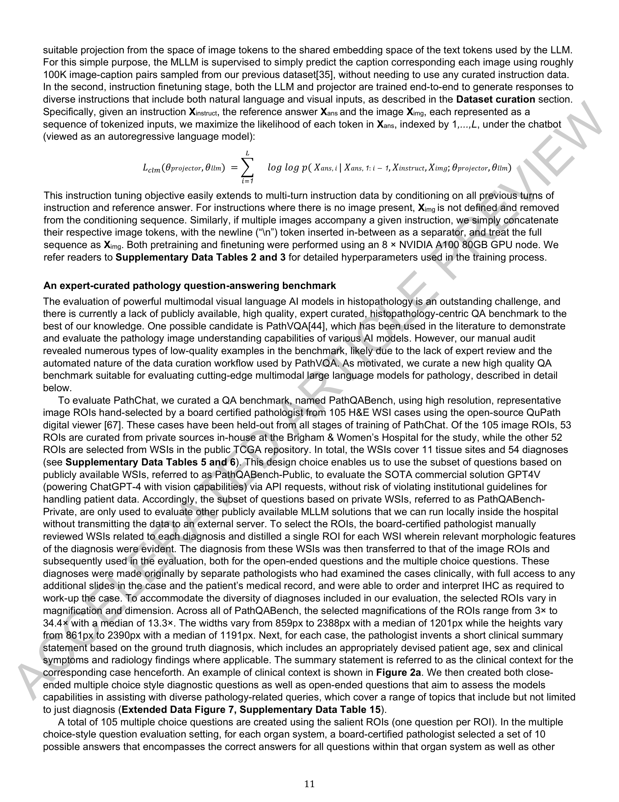
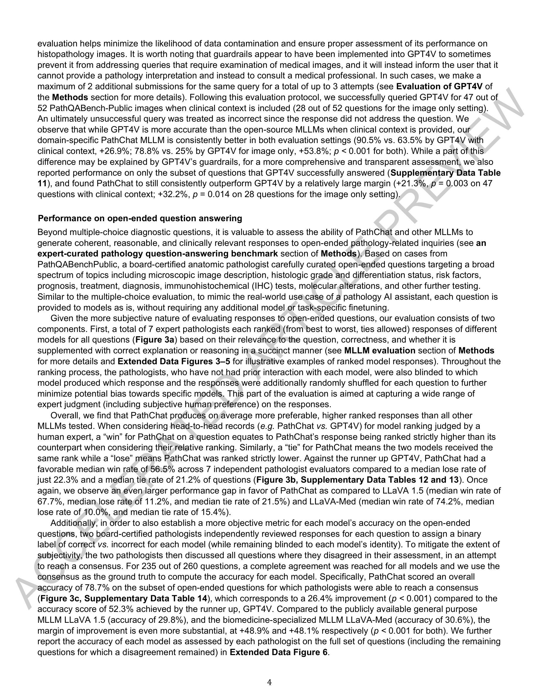
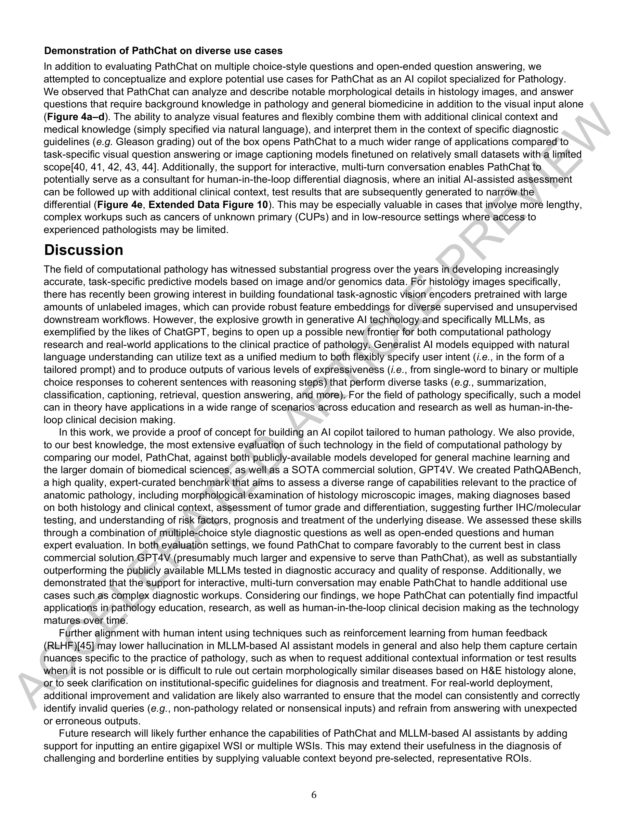

Figure 1
저자: Ming Y. Lu, Bowen Chen, Drew F. K. Williamson, Richard J. Chen, Melissa Zhao, Aaron K. Chow, Kenji Ikemura, Ahrong Kim, Dimitra Pouli, Ankush Patel, Amr Soliman, Chengkuan Chen, Tong Ding, Judy J. Wang, Georg Gerber, Ivy Liang, Long Phi Le, Anil V. Parwani, Luca L. Weishaupt, Faisal Mahmood 학술지: Nature, 634(8033):466-473, 2024 DOI: 10.1038/s41586-024-07618-3
Figure 1
병리학 전용 멀티모달 대규모 언어 모델(MLLM)인 PathChat을 개발하여, 조직병리 이미지와 자연어 질의를 동시에 처리하는 AI 코파일럿을 구현하고, 다지선다형 진단 및 개방형 질의응답에서 GPT-4V를 포함한 기존 모델을 크게 능가하는 성능을 입증하였다.

Figure 2

Figure 3

Figure 4
Nature에 게재된 이 연구는 생성형 AI를 병리학 실무에 접목하는 패러다임 전환적 연구로서, 도메인 특화 비전 인코더(UNI) + 대규모 인스트럭션 튜닝 + 엄밀한 전문가 평가라는 세 축을 견고하게 구성했다. 특히 이미지 기반 질문에서 GPT-4V를 50% 포인트 이상 능가하는 결과는 도메인 특화 MLLM의 가치를 강력히 입증한다. 다만, WSI 전체 입력 미지원, hallucination 위험, 모델 비공개 등은 향후 극복해야 할 과제이다. 병리학 AI 코파일럿의 교육적, 연구적, 임상적 활용 가능성을 개척한 중요한 이정표적 연구이며, RLHF를 통한 정렬 개선, RAG를 통한 최신 지식 갱신, WSI 수준 입력 확장 등 후속 연구의 방향도 명확하게 제시하고 있다.